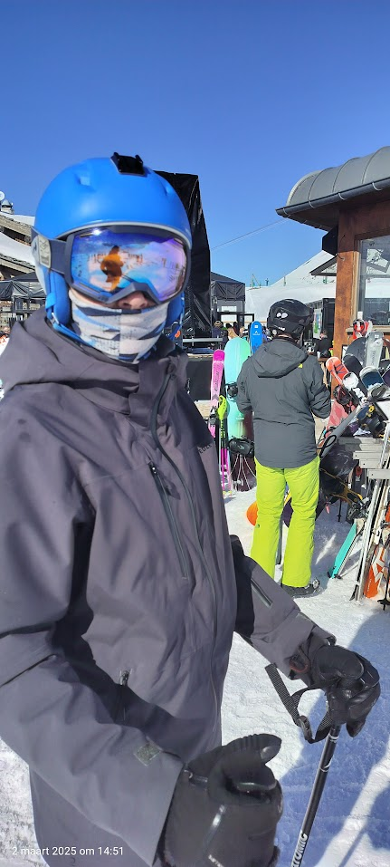

Seppe Vuylsteke
Persoonlijke informatie

- Naam: Seppe Vuylsteke
- Adres: Misseweg 19, 9690 Ruien
- Telefoonnummer: 0123 45 67 89
- Email: seppe.vuylsteke@student.vives.be
Hobby's
- Motorsport kijken: Ik kijk graag naar motorsport zoals WEC, IMSA en Formule 1.
- Voetbal: Ik ben keeper bij KFC Kluisbergen. Ik speel hier bij de reserven.
- Sim-Racen: Dit is racen maar dan in een video game. Ik speel vooral op Assetto Corsa maar ik speel ook andere spellen zoals LMU. Ik speel echter niet alleen de spellen, ik maak ook liveries en tracks om in game te gebruiken.
Intresses:
-
Favoriete artiest:
Hans Zimmer

-
Favoriete liedje:
Young Folks
door Peter Bjorn and John

-
Favoriete film:
Star Wars: Episode III Revenge of the Sith
 link naar de IMDb pagina van de film:
Star Wars: Episode III Revenge of the Sith
link naar de IMDb pagina van de film:
Star Wars: Episode III Revenge of the Sith